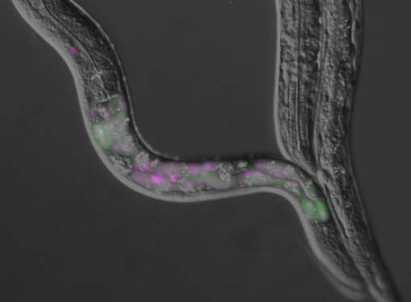

東京医科歯科大学 難治疾患研究所 准教授
▶ プロフィールはこちら
RBM20 is a vertebrate-specific RNA-binding protein with two zinc finger (ZnF) domains, one RNA-recognition motif (RRM)-type RNA-binding domain and an arginine/serine (RS)-rich region. RBM20 has initially been identified as one of dilated cardiomyopathy (DCM)-linked genes. RBM20 is a regulator of heart-specific alternative splicing and Rbm20 ΔRRM mice lacking the RRM domain are defective in the splicing regulation. The Rbm20 ΔRRM mice, however, do not exhibit a characteristic DCM-like phenotype such as dilatation of left ventricles or systolic dysfunction. Considering that most of the RBM20 mutations identified in familial DCM cases were heterozygous missense mutations in an arginine-serine-arginine-serine-proline (RSRSP) stretch whose phosphorylation is crucial for nuclear localization of RBM20, characterization of a knock-in animal model is awaited. One of the major targets for RBM20 is the TTN gene, which is comprised of the largest number of exons in mammals. Alternative splicing of the TTN gene is exceptionally complicated and RBM20 represses >160 of its consecutive exons, yet detailed mechanisms for such extraordinary regulation are to be elucidated. The TTN gene encodes the largest known protein titin, a multi-functional sarcomeric structural protein specific to striated muscles. As titin is the most important factor for passive tension of cardiomyocytes, extensive heart-specific and developmentally regulated alternative splicing of the TTN pre-mRNA by RBM20 plays a critical role in passive stiffness and diastolic function of the heart. In disease models with diastolic dysfunctions, the phenotypes were rescued by increasing titin compliance through manipulation of the Ttn pre-mRNA splicing, raising RBM20 as a potential therapeutic target.
Tropomyosin isoforms contribute to generation of functionally divergent actin filaments. In the nematode Caenorhabditis elegans, multiple isoforms are produced from lev‐11, the single tropomyosin gene, by combination of two separate promoters and alternative pre‐mRNA splicing. In this study, we report that alternative splicing of lev‐11 is regulated in a tissue‐specific manner so that a particular tropomyosin isoform is expressed in each tissue. Reverse‐transcription polymerase chain reaction analysis of lev‐11 mRNAs confirms five previously reported isoforms (LEV‐11A, LEV‐11C, LEV‐11D, LEV‐11E, and LEV‐11O) and identifies a new sixth isoform LEV‐11T. Using transgenic alternative‐splicing reporter minigenes, we find distinct patterns of preferential exon selections in the pharynx, body wall muscles, intestine, and neurons. The body wall muscles preferentially process splicing to produce high‐molecular‐weight isoforms, LEV‐11A, LEV‐11D, and LEV‐11O. The pharynx specifically processes splicing to express a low‐molecular‐weight isoform LEV‐11E, whereas the intestine and neurons process splicing to express another low‐molecular‐weight isoform LEV‐11C. The splicing pattern of LEV‐11T was not predominant in any of these tissues, suggesting that this is a minor isoform. Our results suggest that regulation of alternative splicing is an important mechanism to express proper tropomyosin isoforms in particular tissue and/or cell types in C. elegans.
RBM20 is a major regulator of heart-specific alternative pre-mRNA splicing of TTN encoding a giant sarcomeric protein titin. Mutation in RBM20 is linked to autosomal-dominant familial dilated cardiomyopathy (DCM), yet most of the RBM20 missense mutations in familial and sporadic cases were mapped to an RSRSP stretch in an arginine/serine-rich region of which function remains unknown. In the present study, we identified an R634W missense mutation within the stretch and a G1031X nonsense mutation in cohorts of DCM patients. We demonstrate that the two serine residues in the RSRSP stretch are constitutively phosphorylated and mutations in the stretch disturb nuclear localization of RBM20. Rbm20S637A knock-in mouse mimicking an S635A mutation reported in a familial case showed a remarkable effect on titin isoform expression like in a patient carrying the mutation. These results revealed the function of the RSRSP stretch as a critical part of a nuclear localization signal and offer the Rbm20S637A mouse as a good model for in vivo study.
Tropomyosin, one of major actin-filament binding proteins, regulates actin-myosin interaction and actin filament stability. Multicellular organisms express a number of tropomyosin isoforms, but understanding of isoform-specific tropomyosin functions is incomplete. The nematode Caenorhabditis elegans has a single tropomyosin gene, lev-11, which has been reported to express four isoforms by using two separate promoters and alternative splicing. Here, we report a fifth tropomyosin isoform, LEV-11O, which is produced by alternative splicing which includes a newly identified seventh exon, exon 7a. By visualizing specific splicing events in vivo, we find that exon 7a is predominantly selected in a subset of the body wall muscles in the head, while exon 7b, which is alternative to exon 7a, is utilized in the rest of the body. Point mutations in exon 7a and exon 7b cause resistance to levamisole-induced muscle contraction specifically in the head and the main body, respectively. Overexpression of LEV-11O, but not LEV-11A, in the main body results in weak levamisole resistance. These results demonstrate that specific tropomyosin isoforms are expressed in the head and body regions of the muscles and differentially contribute to the regulation of muscle contractility.

A nematode Caenorhabditis elegans is an intron-rich organism and up to 25% of its pre-mRNAs are estimated to be alternatively processed. Its compact genomic organization enables construction of fluorescence splicing reporters with intact genomic sequences and visualization of alternative processing patterns of interest in the transparent living animals with single-cell resolution. Genetic analysis with the reporter worms facilitated identification of trans-acting factors and cis-acting elements, which are highly conserved in mammals. Analysis of unspliced and partially spliced pre-mRNAs in vivo raised models for alternative splicing regulation relying on specific order of intron excision. RNA-seq analysis of splicing factor mutants and CLIP-seq analysis of the factors allow global search for target genes in the whole animal. An mRNA surveillance system is not essential for its viability or fertility, allowing analysis of unproductively spliced noncoding mRNAs. These features offer C. elegans as an ideal model organism for elucidating alternative pre-mRNA processing mechanisms in vivo. Examples of isoform-specific functions of alternatively processed genes are summarized.Alternative splicing generates protein diversity essential for neuronal properties. However, the precise mechanisms underlying this process and its relevance to physiological and behavioural functions are poorly understood. To address these issues, we focused on a cassette exon of the Caenorhabditis elegans insulin receptor gene daf-2, whose proper variant expression in the taste receptor neuron ASER is critical for taste-avoidance learning. We show that inclusion of daf-2 exon 11.5 is restricted to specific neuron types, including ASER, and is controlled by a combinatorial action of evolutionarily conserved alternative splicing factors, RBFOX, CELF and PTB families of proteins. Mutations of these factors cause a learning defect, and this defect is relieved by DAF-2c (exon 11.5+) isoform expression only in a single neuron ASER. Our results provide evidence that alternative splicing regulation of a single critical gene in a single critical neuron is essential for learning ability in an organism.
Alternative splicing of pre-mRNAs can regulate expression of protein-coding genes by generating unproductive mRNAs rapidly degraded by nonsense-mediated mRNA decay (NMD). Many of the genes directly regulated by alternative splicing coupled with NMD (AS-NMD) are related to RNA metabolism, but the repertoire of genes regulated by AS-NMD in vivo is to be determined. Here, we analyzed transcriptome data of wild-type and NMD-defective mutant strains of the nematode worm Caenorhabditis elegans and demonstrate that eight of the 82 cytoplasmic ribosomal protein (rp) genes generate unproductively spliced mRNAs. Knockdown of any of the eight rp genes exerted a dynamic and compensatory effect on alternative splicing of its own transcript and inverse effects on that of the other rp genes. A large subunit protein L10a, termed RPL-1 in nematodes, directly and specifically binds to an evolutionarily conserved 39-nt stretch termed L10ARE between the two alternative 5′ splice sites in its own pre-mRNA to switch the splice site choice. Furthermore, L10ARE-mediated splicing autoregulation of the L10a-coding gene is conserved in vertebrates. These results indicate that L10a is an evolutionarily conserved splicing regulator and that homeostasis of a subset of the rp genes are regulated at the level of pre-mRNA splicing in vivo.